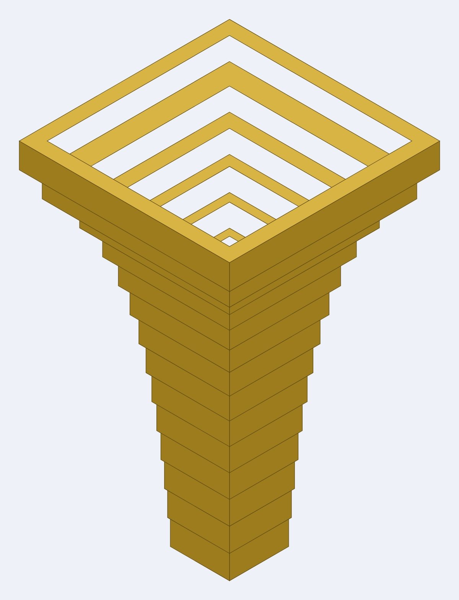
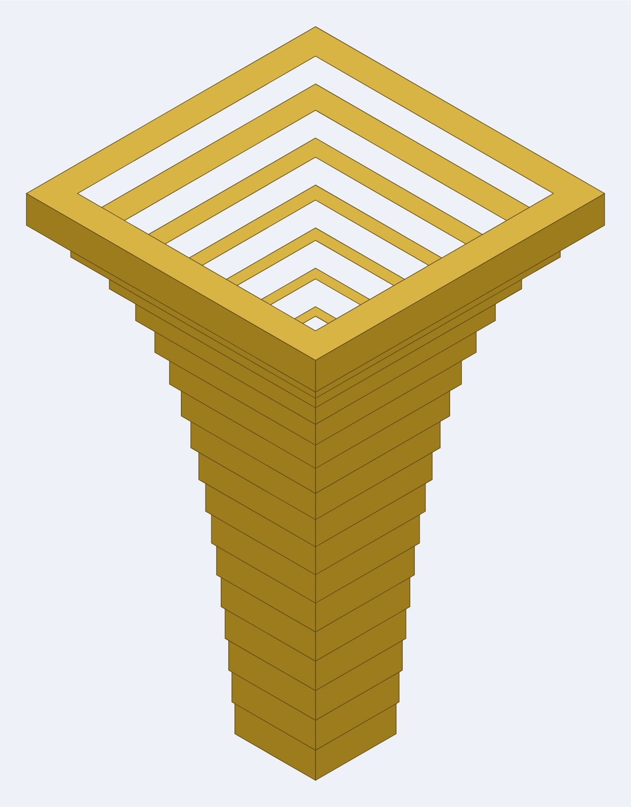

Trumpet parts
The bell and the mouthpiece, shared by every trumpet in these repositories. Both are built on the same 25 × 25mm channel — 31mm outside in 3mm Baltic birch plywood — so either fits any bore cut to it:
- Coiled trumpet — a bore that coils flat and drops twice, with no elbows.
- Octagonal trumpet — a curved octagonal bore, the trumpet form of the octagonal torus.
They live here rather than inside one instrument because neither is changed by the shape of the bore. A trumpet is a mouthpiece, a length of tube and a bell; only the tube differs.
Millimetre-true at 1 user unit = 1mm, so everything prints and cuts at real size.
Built for LaserMadeMusic, where the cutting and the playing are shown.
The rest of the build files — every instrument, generator and tool, indexed.
What fits what
The bore is cylindrical — constant section end to end — and the only part of a trumpet that flares is the bell. That is why these two parts are interchangeable across bores:
| dimension | mates with | |
|---|---|---|
| Bore, outside | 31mm square | the bell's ø31 throat |
| Bore, air channel | 25mm square | the mouthpiece's 25mm station |
| Mouthpiece station one | 31mm square plate | the end face of any bore section |
The mouthpiece
mouthpiece/mouthpiece-parts.svg — 23 rings, 69mm stacked. The 31mm square plate joins the bore, so from the lip end the profile is: a cup of 16 rings narrowing 10.06 -> 4.06mm over 48mm, the throat at 3.66mm (a #27 drill, the standard trumpet size), then a backbore of 6 rings opening 5 -> 25mm over 18mm.
These rings stack; they do not telescope. The wall is 3.00mm at every one of the 23 stations, the throat included, so what varies is the shared face: 2.80mm per side through the cup, 2.33 across the throat, 1.00 at the five 4mm steps. No ring can drop through the one below. The bell inverts it — a fixed 1.5mm lap and a wall that varies with the flare.

mouthpiece/mouthpiece-section.svg is the axial section; both it and the view above are display drawings, not cut files. mouthpiece.py generates the parts and mouthpiece-view.py the view.
A note on its variable names. mouthpiece.py calls the 25 -> 5mm run cup and the 3.66 -> 10.06mm run backbore, which is the reverse of the anatomy: the cup is at the lip and the backbore opens into the instrument. The numbers are right and the parts are right; the names inside the script are not, and the <desc> it writes into the SVG repeats them.
The bell
Four bells. The rings telescope: each ring's aperture is the one below it plus the radius gained, lapped by a fixed 1.5mm for glue, so the bore widens at every joint and the wall varies with the flare.
| File | Rings | Build | Pieces | Rim diameter | Angle | Sheet, per pass |
|---|---|---|---|---|---|---|
bell-trumpet-10rings.svg | 10 | 7 ply | 70 | 126.0 | 2.9° -> 30.0° | 265 × 262mm |
bell-trumpet-14rings.svg | 14 | 5 ply | 70 | 126.0 | 2.8° -> 36.8° | 307 × 326mm |
bell-trumpet-17rings.svg | 17 | 4 ply | 68 | 126.0 | 2.8° -> 38.8° | 347 × 133mm |
bell-trumpet-67rings.svg | 67 | 1 ply | 67 | 145.7 | 9.5° -> 50.8° | 995 × 693mm |
Each file draws every ring once — cut it as many times as the Build column says. The 10-ring bell is 7 laminations a ring: 7 passes, 70 pieces, glued into ten 21mm bands. Cut it once and you get a 30mm bell instead of a 210mm one. Only the 67-ring file is one pass.
All four come to 67–70 pieces, so a coarse bell is not less cutting. It is less material, and by very different amounts: 0.49 m² of 3mm ply for the 10-ring and 0.50 for the 14-ring, against the 67-ring's 0.69. The 17-ring is the outlier at 0.18 m², barely a quarter of the 67-ring, because its sheet is hand-nested rather than laid out by the generator.




10, 14, 17 and 67 rings — the same Bessel profile sampled at four resolutions.
The four files follow a Bessel profile, gamma about 0.7 — the standard model for a trumpet bell — opening from a 31mm throat. The ply is 3mm so a ring rises 3mm; fewer rings means each ring is several identical laminations glued into a single band.
They are not four samplings of one fixed length. A whole number of rings at each rise lands somewhere slightly different, so the four come out 210, 210, 204 and 201mm long, and the 67-ring reaches a wider rim than the other three.
Counter-intuitively, coarser is better at the throat and worse at the rim: at 12mm of rise a 2mm minimum wall is 2.8°, where at 3mm it is stuck at 9.5°. The 17-ring is the balance, and its nested sheet fits a 400mm bed with room to spare. bell.py generates all four. bell-section.py draws the axial sections — bell-trumpet-10rings-section.svg, bell-trumpet-14rings-section.svg, bell-trumpet-17rings-section.svg and bell-trumpet-67rings-section.svg — bell-view.py the assembled views, ramp_bell.py applies the cut-order colour, and verify_bell.py checks an edited sheet.
Colour is the cut order
Blue engraves, then green -> orange -> cyan -> black, with black always the cut that frees the part and violet always skip. That sequence is shared by every LaserMadeMusic repository.
bell-trumpet-17rings.svg is the exception, and its ordering is load-bearing: its rings ramp from #000000 on the smallest to #ff0000 on the rim, one stage per ring, so the cut runs smallest first and no nested part is freed before its own outline is cut. Its numbers are blue, engraved. Give it an explicit operation — a per-colour job silently skips any colour left unmapped.
Before you cut
Cut these in 3mm Baltic birch plywood. Ring thickness is ply thickness here: a bell ring rises 3mm because the sheet is 3mm, and the mouthpiece stacks 23 rings into 69mm the same way. Substituting 4mm stock does not scale the design, it breaks the profile.
bell-trumpet-17rings.svg is hand-nested and hand-labelled. Regenerating it from bell.py discards that work. Check an edited sheet with verify_bell.py rather than diffing path data — once paths are converted to curves, a byte diff says nothing.
Files
The bell, in bell/ — bell-trumpet-10rings.svg, bell-trumpet-14rings.svg, bell-trumpet-17rings.svg, bell-trumpet-67rings.svg, generated by bell.py. ramp_bell.py applies the cut-order colour; verify_bell.py checks an edited sheet for ring sizes, the 1.5mm lap, nesting order and overlapping cuts.
The mouthpiece, in mouthpiece/ — mouthpiece-parts.svg, generated by mouthpiece.py.
Display only, never cut — the axial sections bell-trumpet-10rings-section.svg, bell-trumpet-14rings-section.svg, bell-trumpet-17rings-section.svg, bell-trumpet-67rings-section.svg and mouthpiece-section.svg, drawn by bell-section.py; and the assembled views bell-trumpet-10rings-view.jpg, bell-trumpet-14rings-view.jpg, bell-trumpet-17rings-view.jpg, bell-trumpet-67rings-view.jpg and mouthpiece-view.jpg, from bell-view.py and mouthpiece-view.py.
Released under CC0 1.0.